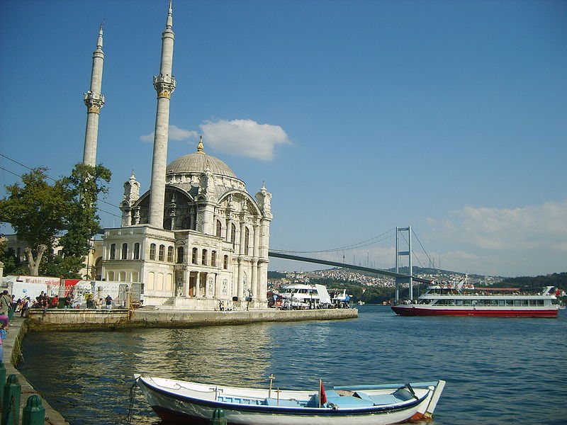
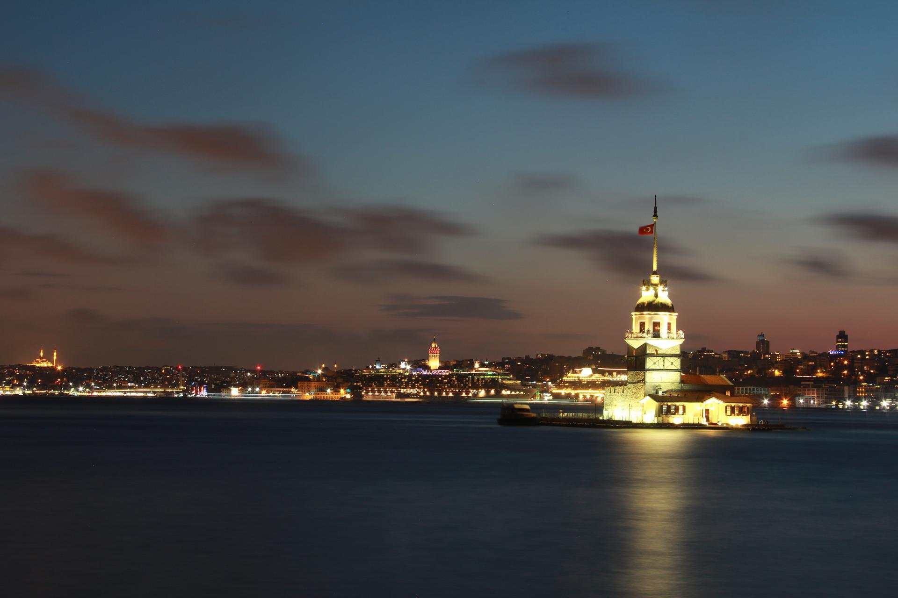
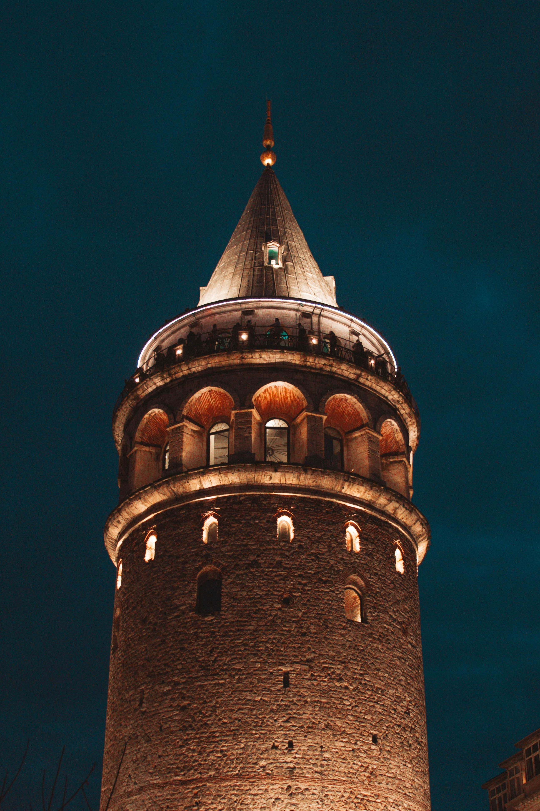
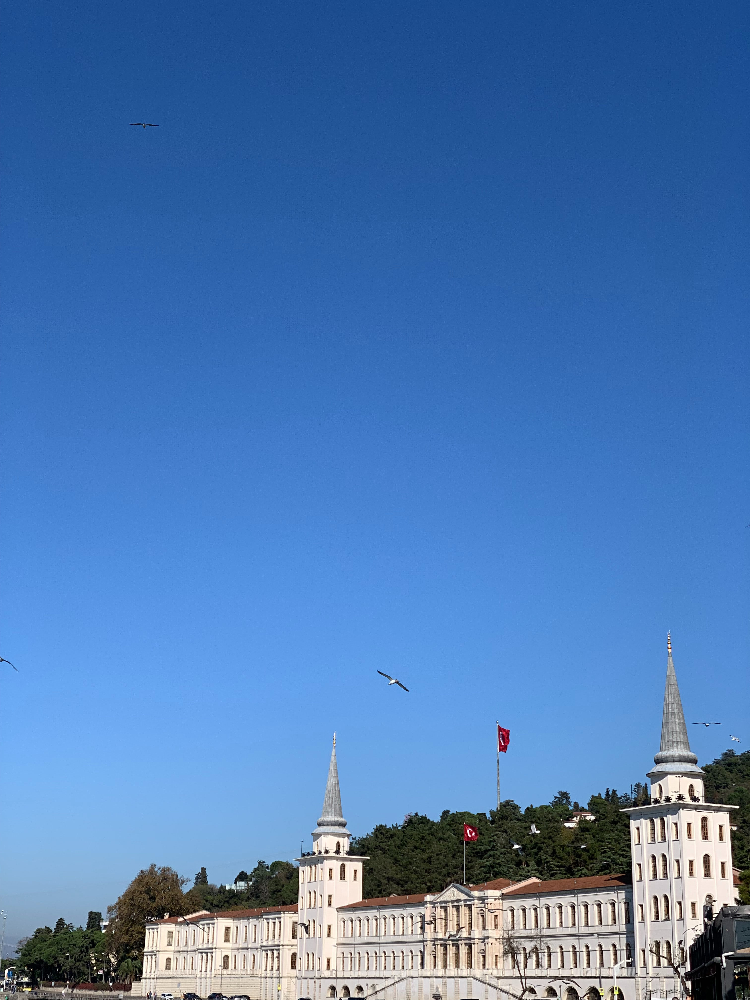

Büyük Mecidiye Camii ya da halk arasında bilinen adı ile Ortaköy Camii, İstanbul Boğaziçi’nde Beşiktaş ilçesinin, Ortaköy semtinde sahilde bulunan Neo Barok tarzında bir camiidir. Cami, Sultan Abdülmecid tarafından Ermeni asıllı Mimar Nigoğos Balyan’a 1853 yılında yaptırılmıştır. Oldukça zarif bir yapı olan cami Barok üslubundadır. Boğaziçi’nde eşsiz bir konuma yerleştirilmiştir. Bütün selatin camilerinde olduğu gibi harim ve hünkar bölümü olmak üzere iki kısımdan oluşur. Geniş ve yüksek pencereler Boğaz’ın değişken ışıklarını caminin içine taşıyacak biçimde düzenlenmiştir. Merdivenle çıkılan yapının tek şerefeli iki minaresi vardır. Duvarları beyaz kesme taştan yapılmıştır. Tek kubbenin duvarları pembe mozaiktendir. Mihrap mozaik ve mermerden, minber ise somaki kaplı mermerden yapılmıştır ve ince bir işçiliğin ürünüdür. Statik açıdan oldukça narin olan yapı 1862’de ve 1866’da onarılmış, 1894 depreminde büyük zarar görünce 1909’da Evkaf Nezâreti’nce yeniden tamir edilmiştir. Bu tamirde yıkılan eski yivli minareler yivsiz olarak yapılmış, minarelerin petek ve külâh kısımlarıyla yapının çeşitli bölümleri yenilenmiştir. 1960’larda binada yeniden çatlamaların oluşması sebebiyle Vakıflar Genel Müdürlüğü’nün başlattığı restorasyon çalışmalarında zemin takviye edilmiş, kubbe yenilenmiştir. Bu onarımda ibadete kapatılan cami 1969’da yeniden açılmıştır. 1984’te büyük bir yangın sonucu kısmen harap olan bina tekrar restore edilmiştir.[1]
Korykos kralı, bir çocuğunun olması için sürekli dua edermiş. Sonunda dileği kabul olmuş ve bir kızı olmuş. Kralın kızı büyüdükçe güzelleşmiş. Ününü duyan krallar, prensler onunla evlenmek istemiş. Bir gün Korykos kentine bir kahin kral tarafından saraya davet edilmiş. Kahin kralın kızını görünce birden irkilmiş. Kral kahine ne olduğunu sorarak söylemeye zorlayınca, “Kızınızı bir yılan sokacak ve ölecek. Bu yazgıyı kimse bozamayacak ve engel olamayacaksınız” diye yanıtlamış. Kral bunun üzerine Korykos Kalesi'nin karşısında kıyıya yakın küçük adacığa bir kale yaptırmış. Yanına hizmetçiler vererek kızını bu kaleye kapatmış. Kızın canı bir gün üzümü çekince saraydan gönderilen sepet içinden bulunan bir yılan çıkarak onu sokmuş ve kız da kısa bir süre sonra ölmüş.[1]
Galata Kulesi ya da müze olarak kullanılmaya başlaması sonrasındaki adıyla Galata Kulesi Müzesi, Türkiye'nin İstanbul şehrinin Beyoğlu ilçesinde bulunan bir kuledir. Adını, bulunduğu Galata semtinden alır. Galata Surları dahilinde bir gözetleme kulesi olarak inşa edilen kule günümüzde, bir sergi alanı ve müze olarak kullanılır. Hem Beyoğlu'nun hem de İstanbul'un sembol yapılarından biridir. Bizans İmparatorluğu ile ittifak hâlinde olan Cenevizliler 1267'de, Haliç'in kuzeyinde bulunan Galata'da "Pera" adlı bir koloni kurmuş, bu koloninin hâkimiyet alanını da zaman içinde Bizans tarafından verilen izinlerle genişletmişti. Tepesindeki haçtan ötürü o dönem "Kutsal Haç Kulesi" (Turris Sancte Crucis) olarak adlandırılan kule de, bu izinlere aykırı bir şekilde kuzeydoğu yönündeki tepeye doğru hâkimiyet alanı artırılarak 1335-1349 yılları arasında bölgede yapılan tahkimatların bir parçası olarak inşa edildi. İki devlet arasında o yıl patlak veren savaş, ertesi yıl imzalanan antlaşmayla sona ererken kulenin bulunduğu tepe Ceneviz kontrolüne bırakıldı. Konstantinopolis'in 29 Mayıs 1453'te Osmanlı İmparatorluğu tarafından alınması sonrasında Pera'daki Cenevizliler, herhangi bir çatışma yaşanmadan koloniyi Osmanlı'ya devretti. Kulenin de dâhil olduğu Galata'daki tahkimatlarda birtakım tahribatlar gerçekleştirilse de, Osmanlı Padişahı II. Mehmed'in fermanıyla kuledeki tahribatlar durduruldu ve tahrip edilen kısımlar yeniden inşa edildi. 1509'daki depremde hasar gören kule, 1510 itibarıyla onarıldı. 16. ve 17. yüzyıllarda, savaş esirlerini tutma yeri ve levazım ambarı, 18. yüzyıl itibarıyla Mehterhâne Ocağı ile yangın gözleyiciler tarafından bir yangın kulesi olarak kullanıldı.
Kuleli Askerî Lisesi, Mekteb-i Fünun-ı İdadiye adı altında 21 Eylül 1845’te bugün İstanbul Teknik Üniversitesi olarak kullanılan Maçka Kışlası’nda kurulmuştur. Bu kışlanın tamiri nedeniyle ilk eğitim öğretim yılını, Mızıka-i Hümayün ve Baltacılar dairesi olarak kullanılan Çinili Köşk’te tamamlamıştır. Maçka Kışlası’nın tamiratının tamamlanması üzerine buraya taşınan Mekteb-i Fünun-ı İdadiye, Sultan Abdülmecit’in de bulunduğu bir törenle 10 Ekim 1846’da ikinci eğitim-öğretim yılına başlamıştır. 1868’de mevcut askerî idadilerin(liselerin) birleştirilmesi kararı alınmıştır. Bu tarihte, Kuleli de dahil olmak üzere, dört askerî idadi “Umum Mekteb-i İdadi Şahane” adı altında birleştirilerek Galatasaray Kışlası’na nakledilmiştir. İdadilerin birleştirilmesinden istenen sonuç elde edilemeyince, 1872’de okulların ayrı ayrı öğretime devam etmeleri kararlaştırılmıştır. Bunun üzerine, Mekteb-i Fünun-ı İdadiye ve Deniz İdadisi, Kuleli Kışlası’na taşınmıştır. Bu tarihten sonra okul “Kuleli İdadisi” adıyla anılmaya başlamıştır. 1877-1878 Osmanlı-Rus Savaşı dolayısıyla Kuleli'nin hastahaneye çevrilmesi kararlaştırılınca okul, Pangaltı’daki harp okulu binasına taşınmıştır. Savaşın sona ermesiyle birlikte Askerî Tıbbiye İdadisi ile birlikte yeniden Çengelköy’deki binasına dönmüştür(1879). Mevcudun artması üzerine okul haricindeki sırt üzerindeki okul hastahanesi tahliye edilip burası tıbbiyeye tahsis edilmiştir. Hastane ise Beylerbeyi’ne taşınmıştır. Askerî Tıbbiye İdadisi, daha sonra Haydarpaşa'ya nakledilmiştir(1910).
